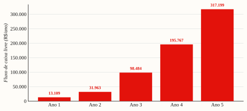

Estudo de Viabilidade Econômico-Financeira (5 anos)
Vale a pena investir os R$ 5 mil? Sim — mas a viabilidade é decidida pela execução (aquisição e o financiamento do lote China), não pela matemática financeira.
Uso interno dos sócios
Brasília/DF · 19 jun 2026 Horizonte: 5 anos · taxa de desconto 12–15% a.a.
VPL @ 13,5% (12–15%)
R$ 385 mil
TIR
~406% a.a.
Payback descontado
< 1 ano
Necessidade de capital
~R$ 5 mil
Síntese A R$ 5 mil de capital, o VPL (R$ 365–407 mil) e a TIR (~406%) são fortemente positivos — porém inflados pelo capital mínimo. O investimento real é o trabalho dos sócios e o risco de execução. A decisão financeira de fato é o lote China (~R$ 99 mil) no ano 3.
1. Veredito
O projeto é economicamente viável com folga — mas por razões que exigem leitura cuidadosa.
A R$ 5 mil de capital, qualquer trajetória de venda minimamente bem-sucedida gera VPL e TIR
altíssimos, porque o capital em risco é mínimo. O VPL fica em R$ 365–407 mil em toda a
faixa de desconto (12–15%), a TIR é de ~406% a.a. e o payback descontado é inferior a 1
ano. Isso não significa negócio fácil: significa que a viabilidade não é decidida pela
matemática financeira, e sim pela execução — construir audiência (o gargalo nº 1) e financiar
o salto de escala (o lote China no ano 3). O EVEF, portanto, serve menos para vale a pena?
(vale, trivialmente) e mais para planejar capital e medir a sensibilidade ao risco real.
2. Metodologia & premissas
Horizonte: 5 anos + Ano 0 (desembolso inicial). Fluxo de caixa anual.
Taxa de desconto: custo de oportunidade dos sócios, 12–15% a.a. (base 13,5%). VPL
calculado nos três pontos.
Fluxo de caixa livre (FCF): Resultado operacional − variação de capital de giro. O
pró-labore é tratado como custo (Estratégia B) — logo o FCF mede o retorno ao capital,
além de remunerar o trabalho dos sócios. Como a B paga pró-labore abaixo do mercado no
início, o FCF dos primeiros anos superestima o retorno puro de capital (parte é trabalho
diferido). [estimativa]
Capital de giro: estoque médio = COGS × (dias de estoque ÷ 360), com 60 dias editáveis.
Pré-venda + pix (caixa adiantado) tendem a reduzir essa necessidade.
Tributos: Ano 1 em MEI (DAS fixo); anos 2–5 em ME/Simples (a receita ultrapassa o
teto MEI já no ano 2), com alíquota efetiva crescente (5% → 10%) [estimativa].
Trajetória de unidades (combinada, 2 SKUs): 387 / 1.440 / 3.000 / 4.800 / 6.800 — anos 1–2
dentro do SOM pesquisado; anos 3–5 [ilustrativo].
3. Projeção — DRE & fluxo de caixa (R$)
Ano 1
Ano 2
Ano 3
Ano 4
Ano 5
Unidades (un)
387
1.440
3.000
4.800
6.800
Preço médio
114
124
129
134
138
Custo/un
45
42
33
30
28
Receita bruta
44.118
178.560
387.000
643.200
938.400
(−) Marketing
2.900
12.000
25.000
45.000
70.000
(−) Pró-labore (B)
0
30.000
72.000
96.000
120.000
(−) Impostos (MEI/Simples)
972
8.928
27.090
57.888
93.840
(−) Outras despesas
1.200
6.000
12.000
20.000
28.000
(−) Custo do produto (na MC)
na MC/un
(=) Resultado operacional
16.011
39.140
104.904
203.267
324.932
Capital de giro (estoque)
2.903
10.080
16.500
24.000
31.733
(−) Δ capital de giro
2.903
7.177
6.420
7.500
7.733
(=) Fluxo de caixa livre
13.109
31.963
98.484
195.767
317.199
FCF acumulado (desde −5.000)
8.109
40.072
138.556
334.323
651.522
(A margem de contribuição por unidade — R$ 54 / 67 / 80 / 88 / 94 — já desconta canal, frete,
pagamento, devoluções e o custo do produto; ver aba Unit Economics.)
FIGURA 1
O fluxo de caixa livre cresce com a escala

Fluxo de caixa livre por ano (após pró-labore e capital de giro). Anos 3–5 ilustrativos. Fonte: modelo (aba EVEF).
4. Indicadores de viabilidade
Indicador
Valor
Leitura
VPL @ 12% / 13,5% / 15%
R$ 406.685 / 385.088 / 364.957
fortemente positivo em toda a faixa
TIR
~406% a.a.
muito acima do custo de oportunidade — mas inflada pelo capital mínimo
Payback descontado
< 1 ano
os R$ 5 mil voltam já no ano 1
Capital de giro (Ano 1 → 5)
R$ 2,9 mil → R$ 31,7 mil
cresce com a escala; pix/pré-venda reduz
Necessidade de capital operacional
~R$ 5 mil
o caixa nunca fica negativo após o Ano 0
5. Leitura crítica (o que os números não dizem)
VPL/TIR são inflados pelo capital ínfimo. Com R$ 5 mil de entrada, quase qualquer
sucesso de vendas produz TIR de três dígitos. O investimento real é o trabalho dos
sócios (pró-labore abaixo do mercado no início) e o risco de execução, que a TIR não
captura. Não use a TIR para vender o projeto — use-a só para confirmar que o retorno supera
com folga os 12–15% de custo de oportunidade (supera).
O gargalo é aquisição, não capital. Toda a projeção pressupõe vender 387 → 6.800 un. Isso
depende de construir audiência do zero (ver business plan §6) — o verdadeiro risco. Se a
aquisição patinar, a receita não se materializa e os indicadores acima evaporam.
Escala 100% autofinanciada — decisão tomada (jun/2026). Os sócios optaram por acumular
caixa e só comprometer um lote grande de importação quando ele se pagar com folga — sem
pré-venda (evita o risco de espera longa e dano à reputação) e sem empréstimo ou aporte
(evita descapitalizar ou ficar preso a uma dívida sem vender). Gatilho de capitalização:
comprometer um lote de importação só quando caixa acumulado ≥ custo do lote + colchão de
3 meses de custos fixos (100% próprio) e quando o volume sustentado justificar (~5.000
un/ano, onde a China ganha claramente). Em números: lote China ~5.000 un ≈ R$ 90 mil + colchão
~R$ 45 mil ≈ R$ 135 mil de caixa — patamar que o FCF acumulado cruza no fim do Ano 3 /
Ano 4. Ponte até lá: escalar na gráfica BR (offset) em lotes crescentes pagos pela
receita (já ~R$ 18–32/un a 3.000–5.000 un). Ou seja, não há abismo de R$ 99 mil: o
negócio cresce em degraus autofinanciados e a China vira opcionalidade, não necessidade.
6. Sensibilidade & cenário de baixa
Variável que mais move o resultado: VOLUME (audiência). Preço e custo têm efeito de
segunda ordem; a aba Sensibilidade mostra que abaixo de ~340 un/ano o Ano 1 não cobre o
pró-labore (na Estratégia A) — sob a B, o Ano 1 não tem essa pressão.
Custo da gráfica [a confirmar]: se o micro-lote sair a ~R$ 65/un (topo da faixa), o
Ano 1 encolhe e o break-even do 1º lote fica difícil — confirmar por 3 orçamentos antes de
comprometer capital (ver consultoria de sourcing).
Anos 3–5: se a escala via China não acontecer, o negócio ainda é lucrativo em regime
nacional (margem cheia na reposição), mas o VPL cai para a faixa dos anos 1–2 anualizados —
ainda positivo, porém sem o salto.
Câmbio / tributos: mudanças de alíquota de importação ou de câmbio afetam o ponto de
virada da China, não a operação nacional dos anos 1–2.
7. Conclusão & condicionantes
Economicamente, o projeto é viável e cria valor muito acima do custo de oportunidade de
12–15%. A decisão não deve se apoiar no VPL/TIR (inflados pelo capital baixo), e sim em
três condicionantes de execução:
Provar a aquisição orgânica (audiência do zero) — sem isso, nada se realiza.
Confirmar o custo de produção (3 orçamentos de gráfica) antes do 1º lote.
Escalar de forma 100% autofinanciada — crescer em lotes BR (offset) pagos pela receita e
migrar para a China só quando o caixa cruzar o gatilho (~R$ 135 mil, fim do Ano 3/Ano 4),
sem pré-venda e sem empréstimo. Assim a China deixa de ser um risco de capital e vira ganho
marginal opcional.
Sob a Estratégia B, o negócio se autofinancia ao longo dos anos 1–2 (nunca fica com caixa
negativo após os R$ 5 mil), remunera os sócios de forma crescente a partir do Ano 2 e acumula
~R$ 650 mil de caixa livre em 5 anos no cenário ilustrativo — condicionado a executar a
aquisição e o salto de escala.
Documento de apoio à decisão dos sócios. VPL/TIR sensíveis às premissas dos anos 3–5
(ilustrativos). Custos de produção a confirmar por orçamento; tributos por contador. Não
constitui recomendação financeira. Números conferidos contra models/viabilidade-planners-v2.xlsx
(aba EVEF) por recálculo independente.
Notas, confiança e fontes
Marcações de confiança usadas no texto — [confirmado]: fonte primária datada e verificável · [estimativa triangulada]: ≥2 fontes convergentes, sem confirmação formal · [a confirmar]: faixa de mercado, não apresentada como fechada.
Modelo viabilidade-planners-v2.xlsx (aba EVEF), conferido por recálculo independente; research/evidence/. Anos 3–5 ILUSTRATIVOS; tributos por contador.